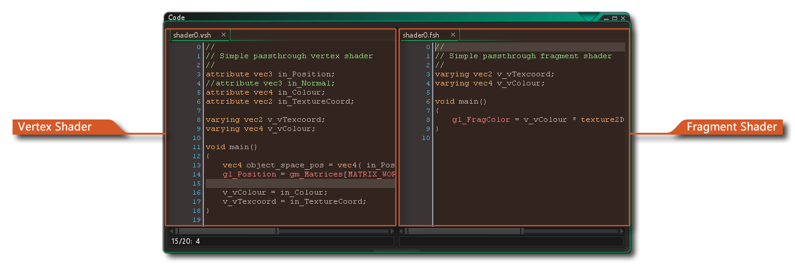

 Shader sind ein sehr leistungsfähiges Werkzeug, mit dem Sie die Grafiken bearbeiten können, die Ihr Spiel auf dem Bildschirm darstellt. Dies ermöglicht unglaublich schnelle Effekte, die z. B. einen subtilen Farbton zu einem Sprite hinzufügen können, bis hin zu Vollbildverzerrungseffekten. Aber was ist ein Shader?
Ein Shader ist im Grunde genommen ein zweiteiliges Programm, das direkt auf der Grafikkarte läuft, was es sehr schnell macht, da die GPU die ganze Arbeit macht und CPU-Zyklen für Ihren Spielcode freigibt. Der vollständige Shader besteht aus einem Vertex-Shader-Programm und einem Fragment-Shader-Programm (auch bekannt als Pixel-Shader). Beide kleinen Programme arbeiten zusammen, um zu manipulieren, was die Grafikkarte auf dem Bildschirm rendert. Dies ermöglicht Ihnen dann, in Echtzeit die Positions-, Farb- und Alpha-Werte zu manipulieren, die tatsächlich in den Anzeigepuffer gerendert werden.
Der Vertex Shader ist die programmierbare Shaderstufe in der Rendering-Pipeline, die die Verarbeitung einzelner Vertices (die Punkte der Dreiecke, die zum Rendern eines Bildes verwendet werden) und beim Rendern einer Geometrie - wie Sprite oder Oberfläche - mit GameMaker Studio 2 erstellt einen Strom von Vertices, einen Vertex Buffer, der die Geometrie dieser Dreiecke definiert. Ein Sprite würde beispielsweise eine Geometrie von zwei Dreiecken (Polygonen) haben, die zusammen zu einem "Quad" zusammengefasst werden. Dieser Vertexstrom aus dem Vertex-Puffer wird als Eingabe dem Vertex-Shader zugeführt, der die Vertices-Daten auf programmierbare Weise verarbeiten kann. Die Vertex-Shader-Ausgabe wird von der GPU verwendet, um Dreiecke zu erstellen, die dann ordnungsgemäß abgeschnitten und an den Anzeige-Port übergeben und dann an den Rasterizer-Block der GPU gesendet werden, der einen neuen Ausgabestrom generiert, der aus Fragmenten besteht. Dies sind winzige Datenstrukturen, von denen jede relativ zu einem einzelnen Dreieckspixel ist, das auf dem Bildschirm erscheint.
Der Fragment Shader ist die programmierbare Shader-Stufe in der Rendering-Pipeline, die sich mit "Fragmenten" befasst - den interpolierten Pixeln, die zum Texturieren eines gegebenen Polygons verwendet werden - und sie sind verantwortlich für die Ausgabe der endgültigen Pixelfarbe jedes gerenderten Dreieckspixels. Im Prinzip funktioniert das so: Der Fragment-Shader empfängt alle diese Fragmente (die einzelnen Pixel des gerenderten Dreiecks), die vom Vertex-Shader entlang der Pipeline weitergeleitet wurden. Sie können diese Fragmente dann verarbeiten, um die Farbe und das Alpha des endgültigen Zielpixels zu ändern, das auf den Bildschirm gezeichnet wird.
Ein vollständiger Überblick darüber, wie Shader wirklich funktionieren und welchen Platz sie in der Grafikpipeline haben, liegt außerhalb des Rahmens dieses Handbuchs, aber YoYo Games hat eine Reihe von Tech Blog Artikeln produziert, die eine ausgezeichnete Basis für den Start bieten:
GameMaker Studio 2 unterstützt die folgenden Shader-Sprachen:
| Shader-Sprache | Zielplattform |
|---|---|
| GLSL ES | Alle Zielplattformen |
| GLSL | Mac und Ubuntu (Linux) |
| HLSL11 | Windows, UWP, Xbox One |
| PSSL | Playstation 4 |
Um eine Shader-Ressource zu erstellen, klicken Sie einfach mit der rechten Maustaste  Klicken Sie auf den Shader-Ordner in der Ressourcenstruktur und wählen Sie Erstellen. Sobald Sie den Basis-Shader erstellt haben, können Sie die rechte Maustaste verwenden
Klicken Sie auf den Shader-Ordner in der Ressourcenstruktur und wählen Sie Erstellen. Sobald Sie den Basis-Shader erstellt haben, können Sie die rechte Maustaste verwenden  Menü auf der neuen Ressource, um den Shader-Typ auszuwählen, bevor Sie den Code bearbeiten:
Menü auf der neuen Ressource, um den Shader-Typ auszuwählen, bevor Sie den Code bearbeiten: 
Der Code-Editor selbst ist in zwei Programme aufgeteilt, wenn Sie einen neuen Shader erstellen, wobei jeder von oben über die Registerkarten verfügbar ist. Dies liegt daran, dass Sie keinen Shader ohne beide Teile erstellen können. Selbst wenn Sie nur den Fragment - Shader verwenden möchten, müssen Sie zuerst einen "Pass Through" - Vertex - Shader erstellen, weshalb standardmäßig jeder neue Shader, der erstellt wird, einen Vertex und einen Fragment - Pass - Shader hat, die bereits für Sie codiert sind Der Screenshot am oberen Rand der Seite, Sie können sehen, dass wir die Code-Editor-Ansicht verwendet haben, um die beiden nebeneinander zu zeigen... nützlich, wenn Sie an beiden Shader-Programmen zusammen arbeiten).
Es ist erwähnenswert, dass Sie GLSL ES Shader auf allen Zielplattformen verwenden können, aber für die HTML5 Zielplattform, aber Sie müssen WebGL in den HTML5 Spieloptionen aktiviert haben, sonst wird es nicht funktionieren.
Weitere Informationen zu Shader-Funktionen und wie sie in GameMaker Studio 2 Sie auf den folgenden Seiten:
- Shader-Funktionen - Der GML-Referenzabschnitt für Shader
- Shader-Konstanten - Die in GameMaker Studio 2 integrierten Konstanten, die beim Schreiben von Shadern verwendet werden können
- GLSL ES Spezifikationen - pdf der Open GL Shader Language-Spezifikationen, die GameMaker Studio 2 verwendet